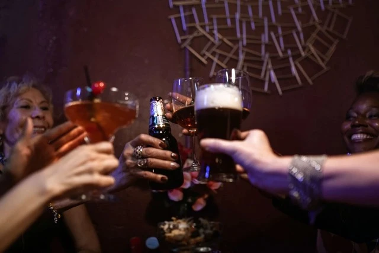
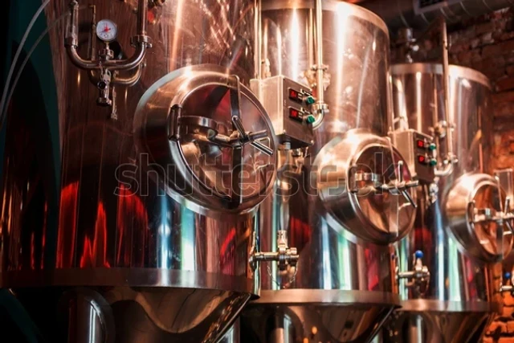

Strategy and Business Planning
Developing Plans to Grow and Refine the Business.
Market analysis, analytics, and strategy for breweries, distilleries, wineries, and beverage brands, from a Certified Cicerone with a computer science background and a decade of consulting experience.
I help beverage alcohol producers understand their market, their customers, and their own numbers well enough to make confident decisions. Whether you’re launching a brand, scaling distribution, or trying to work out why sales have stalled, I’ll show you where the opportunities are and build the plan to capture them.<
I work with: • Breweries, cideries, and meaderies • Distilleries and spirits brands • Wineries and wine brands • Ready-to-drink and emerging beverage brands • Importers, distributors, and suppliers
/p>
Developing Plans to Grow and Refine the Business.
Metrics and Data Driven Decision Making Baseline.
Expert Guidance on Starting Your Company.

Leveraging Data Analytics and Operational Excellence to Grow.
Need help getting your brewery off the ground? Need advice on how to best take your products to market, optimize your sales pipeline and operations, or how to grow your business? Want to learn more? Reach out to discuss what we can do help!